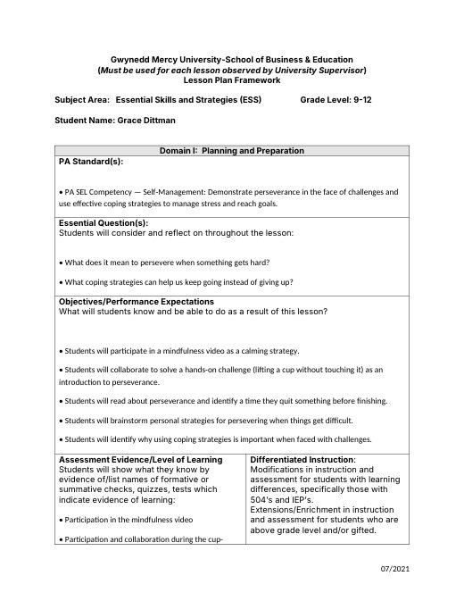
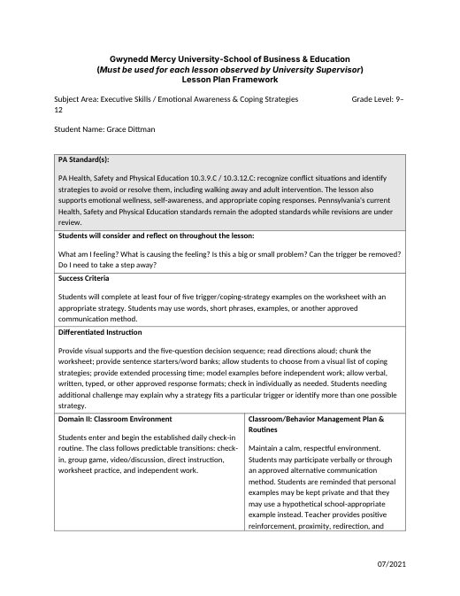
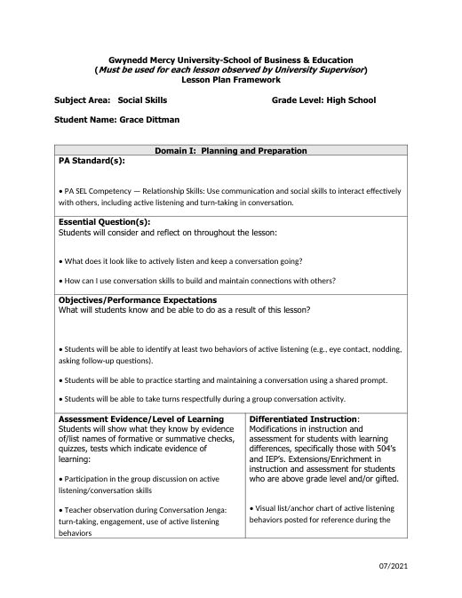

Grace Dittman
Student Teaching Portfolio
Block 2 Math
Block 3 Math
ESS
Lesson Plans
Résumé
Search
Home
›
Lesson Plans
›
B4 ESS
B4 ESS
← B3 Learning Support Math
Emotional Awareness
ESS9-22 & 9-27LessonPlan.docx
Asynchronous Day Plan (PSAT day, all three classes)
Async Lesson Plans 10-22.docx
Executive Functioning Self-Assessment
ESS9-14LessonPlan.docx
Identifying Triggers
ESS9-15LessonPlan.docx
Ice-Breakers & Student Profiles
ESS9-16LessonPlan.docx
Writing a Professional Email
ESS9-17LessonPlan.docx
Friday Organization Reset
ESS9-18LessonPlan.docx
Working in Groups
ESS9-23 & 9-30LessonPlan.docx
Mindfulness & Breaking Down Tasks
ESS9-28LessonPlan.docx

Perseverance
ESS10-5LessonPlan.docx

Triggers & Coping Strategies
ESS10-6&13LessonPlan.docx

Active Listening & Conversation Skills
ESS10-7&10-14LessonPlan.docx
Staying Organized: Keeping an Agenda
ESSAgendaLessonPlan.docx
Staying Organized: Managing Email
ESSEmailLessonPlan.docx
Friday Routine: Missing Work & Organization
ESSFridayRoutineLessonPlan.docx
Student-Led Communication Email (weekly Thursday)
ESSThursdayLessonPlan.docx
← B3 Learning Support Math